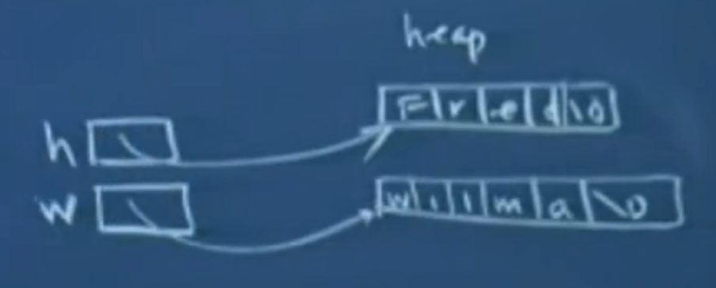

# 斯坦福编程范式 CS107_4
# 使用 C 做出类似 C++ 中模板的效果
还是第三节中的交换函数，因为中间变量 temp 被声明为 int，所以系统就隐式默认这个在进行 4 字节的复制，所以我们不可能使用之前的函数进行 double 类型或者其他类型变量的交换。我们可以通过通用的指针类型 void * 来达到不提前限制类型的效果，它说明指向没有任何类型信息的某些东西。
但如果你按照下述内容进行编码运行，就会出现问题
void swap(void *vp1,void *vp2){ | |
void temp = *vp1; | |
*vp1 = *vp2; | |
*vp2 = temp; | |
} |
首先，void temp 会报错，因为不能将变量定义为 void 类型。其次，不能对 void * 进行解引用，因为机器不知道要取出来多少字节来作为操作的一部分。因此我们还需要第三个参数，大小 size。
void swap(void *vp1,void *vp2,int size){ | |
char buffer[size]; | |
memcpy(buffer,vp1,size); // 和 strcpy 很像，但它不会检测 \0，所以需要人为设置需要拷贝的字节大小 | |
memcpy(vp1,vp2,size); | |
memcpy(vp2,buffer,size); | |
} | |
int x = 17, y = 37; | |
swap(&x,&y,sizeof(int)); |
现在假设我们有以下变量
char *husband = strdup("Fred"); | |
char *wife = strdup("wilma"); |

如果我们想将 husband 和 wife 的名字调换一下，我们实际上只需要将其所指的指针调换即可，使 husband 指向 wilma，使 wife 指向 Fred。
swap(&husband,&wife,sizeof(char*)); // 这里需要取地址，因为我们实际上交换的就是 h 和 w 所指向的内容，当我们想要交换两 // 个 int 变量时，我们传入的时 int *，那么我们想要交换两个 char * 变量时，应该 // 传入的是 char ** |
但是如果你忘记加 &，程序仍然会编译并运行
swap(husband,wife,sizeof(char*)); |
这样最终结果会直接改变两个字符串的值，分别为 wilm 和 Freda。
# 例子
int lsearch(int key,int array[],int size){ | |
for(int i=0;i<size;i++){ | |
if(array[i]==key) // 这一步在位的层面上比较是的 4 个字节是否相等 | |
return i; | |
} | |
return -1; | |
} |
如果我们想让这个函数泛化，不只是查找一个 int 类型的 key，就需要多加一些参数。
void *lsearch(void *key, void *base,int n,int elemSize){ | |
for(int i=0;i<n;i++){ | |
void *elemAddr = (char*)base + i*elemSize; // 这里将 void * 类型转换成 char * 类型，以便编译器能进行运算 | |
if(memcmp(key,elemAddr,elemSize) == 0 return elemAddr;) // 在内存层面，一个字节一个字节进行比较 | |
} | |
return NULL; | |
} |
上述方法使用的是系统提供的比较函数，在下次课程中，将会使用下面的代码，在变量中加入了比较函数的指针 *cmpfn 来完成 memcmp 函数的功能。
void *lsearch(void *key, void *base,int n,int elemSize,int (*cmpfn)(void *,void *)){
}